Neural Networks and Their Applications
Neural network is one prominent machine learning algorithm nowadays, it has been widely used in many applications such as image detection and recognition, image segmentation, medical image analysis, natural language processing, recommender systems, and financial time series because it is so powerful. Ones might have a question, why is it so powerful? Today we are exploring some fundamental concepts of a neural network, its benefit and advantages, and its application in machine learning.
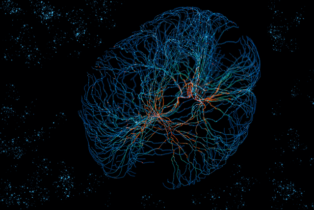
Figure 1. A human brain neuron network (image source: https://news.mit.edu/2022/neural-networks-brain-function-1102)
What is a neural network?
A neuron network refers to a network that is consisted of many single neuron units. A study of neurons in the human brain first started in 1957 when Frank Rosenblat, a psychologist from Cornell University, demonstrated the functionality of a single neuron or a perception consisting of weight and threshold connected to input and output layers.
A neuron or a perceptron is actually the smallest unit of a neural network, it consists of dendrites that act as units to receive input signals, and transfer the signals through the nucleus which is the central control unit of a neuron. The nucleus performs a function and transmits a result signal through an axon which axon terminals are connected to the next neurons. With this structure, we can connect a number of neural together to have a bigger connected neural, and this is a neural network!
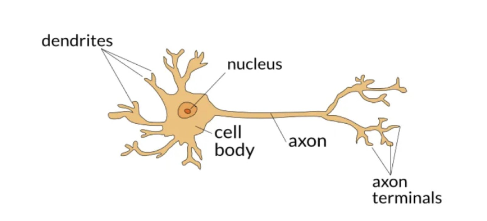
Figure 2. A single neuron (image source: https://appliedgo.net/perceptron/)
What is an artificial neural network(ANN)?
As the main idea and functionality of the human brain neural network in Figure 2, we can simulate this function as a mathematic unit that performs a transformation of a nucleus and transfers this signal as output which is finally will be an input for the next connected neural units. This is what we call, an artificial neural network, or ANN in brief. Furthermore, many times in machine learning applications, people will refer to this artificial neural network as a neural network.
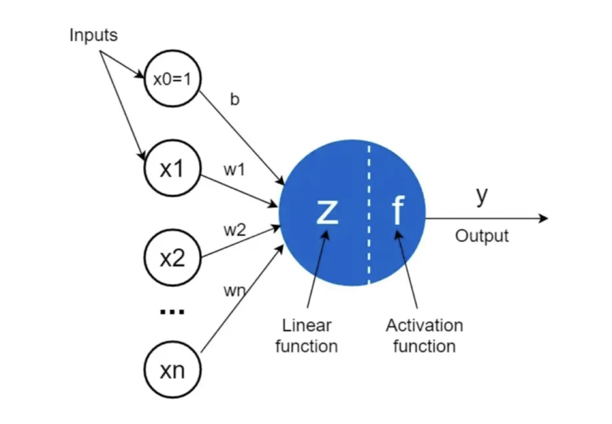
Figure 3. An artificial neuron (image source: https://towardsdatascience.com/the-concept-of-artificial-neurons-perceptrons-in-neural-networks-fab22249cbfc)
As the same as a neural network, we can connect a number of artificial neural to have an artificial neural network. How large an artificial neural network is determined by the number of nodes and the number of layers. Node is usually referred to a number of each individual artificial neural. One simple thought of a number of nodes is like a number of rows in a matrix. Layer refers to a set of nodes that we stack together horizontally. Also, a simple view of layers is like a number of columns in a matrix. Figure 4 below shows a fully connected ANN with 4 nodes and 3 layers.
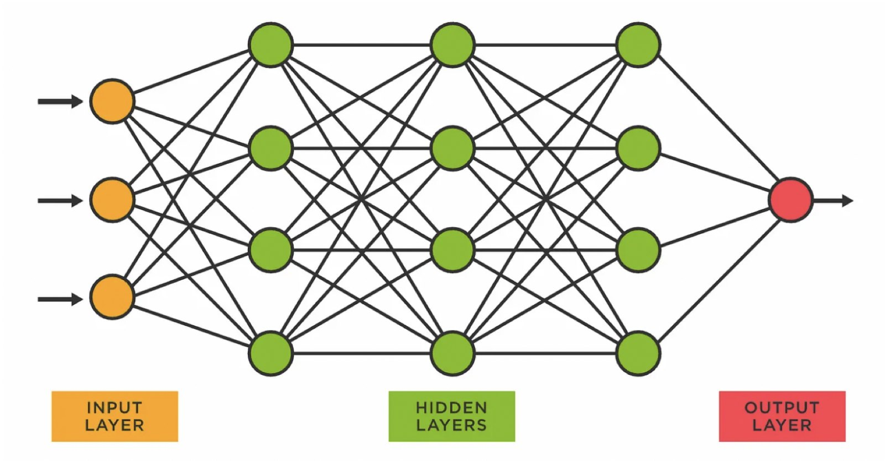
Figure 4. A fully connected ANN with 4 nodes and 3 layers (image source: https://www.tibco.com/reference-center/what-is-a-neural-network)
In addition, the first layer of the ANN connected to the input is usually called an input layer while the final layer connected to the output is called an output layer. The hidden layers refer to the middle layers connected between an input layer and an output layer. The number of nodes and layers plays an important role in the model performance. Usually, when we have a large enough number of nodes and layers, we have the ability to adjust the transformation function of the neural network to be exactly the same as the function between the input and the output. Therefore we can have a large number of nodes in one layer, usually, people set the number of nodes to be the same as the input size but it is not limited to that, and in certain applications such as image detection, we tend to set our ANN with a large number of nodes which is sometimes larger than the input size to enhance the flexibility to match the exact function between the input and the output.
Why an artificial neural network is so useful?
Refer to Figure 3 that any ANN consists of weight, bias, and an activation function. These three parameters of ANN play a crucial role and have a powerful character when used in machine learning applications. Weight is a parameter that scales the magnitude of each input connected to the neuron. Each input will have a different weight value since each input may have a different effect on the output or the next connected node. All of the input signals are multiplied by their weight and it is then added together as a weighted summation. This weighed summary is adjusted with the bias of each layer. Then, the result of this calculation is transferred to an activation function which is normally a nonlinear function before transferring the output signal as an output of this node.
The magic of activation function
There are many types of activation functions used with ANN. The popular activation functions are Sigmoid, Tanh, ReLU, Leaky ReLU. The activation function provides us with one important feature which is the ability to have a transformation of one state to another state. This is a special ability that enhances us to use ANN with any nonlinear data.
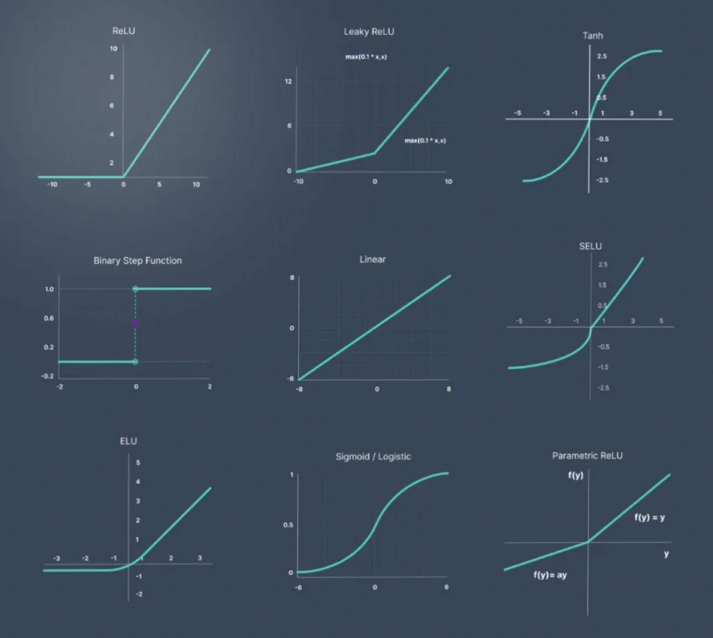
Figure 5. Activation functions (image source: http://neuralnetworksanddeeplearning.com/chap4.html)
Let’s explore this special property together! Suppose we have a simple ANN with two nodes and 1 layer connected with Sigmoid activation function as in Figure 6 below.
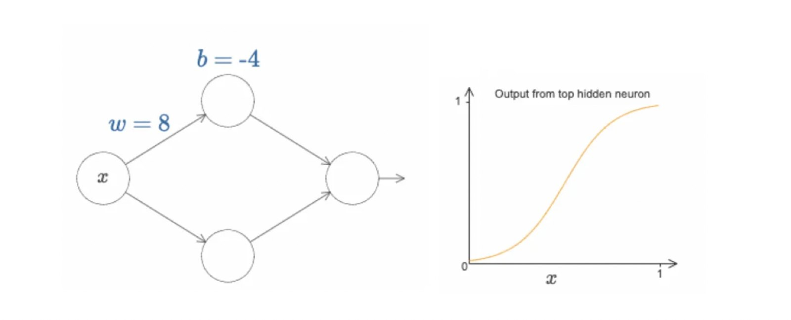
Figure 6. A simple ANN with 2 nodes and 1 layer with Sigmoid activation function (image source: http://neuralnetworksanddeeplearning.com/chap4.html)
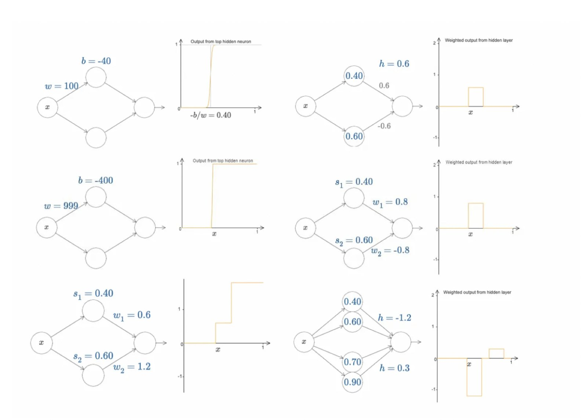
Figure 7. Different outputs by varying weights and a bias value (image source: http://neuralnetworksanddeeplearning.com/chap4.html)
It is amazing that we can just vary the weights and bias of these two neuron units and we can have different transformations of the output function such as shape and split location of the output, it varies largely by just changing these weights and bias values as in Figure 7.
Furthermore, we can set any behavior of activation function as we want. We can have a step function of transformation which can be a step in the same direction or a step in opposite direction, these provide us a great ability to adjust our network to fit with any nonlinear behaviors. Also, this transformation from one state to another state is really important because it generates nonlinear behavior in our network, and once we have this ability, it is not that important whether what kind of activation function we use because we can vary the shape and split location to have the behavior as we want. Therefore, as in Figure 8, the highly nonlinear result is captured by an ANN with a number of nodes and just a layer connected with Sigmoid function.
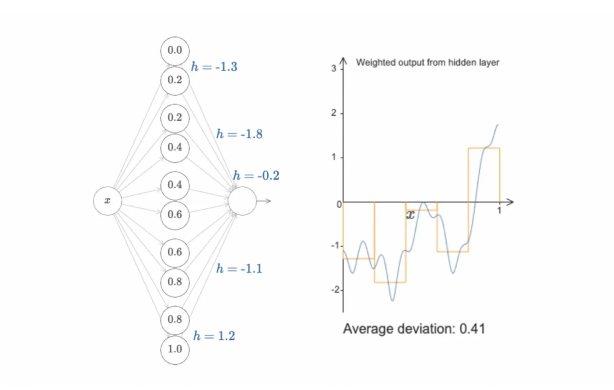
Figure 8. An ANN with a number of nodes is able to capture nonlinear responses (image source: http://neuralnetworksanddeeplearning.com/chap4.html)
You might be wondering why the neuron response in orange does not suit the true output as a blue line, yes, it does not properly align yet because we have not trained our ANN yet. If we finish training our ANN model, it will definitely provide a better result. Therefore the artificial neural network is widely used in many applications having nonlinear behaviors.
Is this really important?
Yes, it is really important. In the real world, the data will be in any form of nonlinear data, we rarely see pure linear data such as in textbooks or classrooms. Having said that, any linear machine learning will not work with nonlinear real-world data perfectly. Therefore, having this nonlinear ability with the flexibility to adjust, is really crucial and it gives a lot better model performance working with nonlinear and complex data.
Let’s try our first artificial neural network model!
One interesting website providing interactive tools for learning neural networks is https://playground.tensorflow.org. On this website, there is an interactive tool that you can start playing and learn more about neural networks. The tool provides the data set we want to test on the left panel, in the middle panel, we can choose what inputs we want to use in our model, specify how big our neural network is by choosing a number of nodes and layers, set other parameters such as learning rate(how fast the model learn) and activation function. Once we finish setting this, we can go to the play button and it starts to train the model. While training, we can see that the model is adjusting its weights and biases to fit the output response, we can also observe how the model acts in each iteration, and we can finally see the result of the model. In Figure 9 below, we tried to use an ANN with 2 layers with inputs, x1 and x2, to classify the circular data. It turned out that using just a small ANN, we could have a perfect result for this classification problem. This somehow indicates the power of ANN.
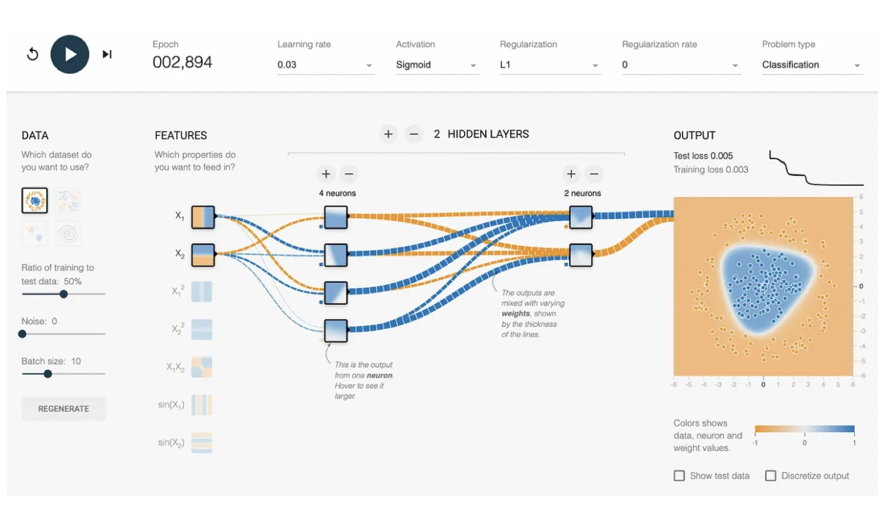
Figure 9. A simple ANN with 2 layers (image source: https://playground.tensorflow.org)
Is that too simple?
You might still be wondering that the problem is not complicated yet, hmm, the circular classification is actually quite challenging already. Imagine that you have to solve this problem with a linear regression, is it possible to solve it? No, it is definitely not!
Yet, if you want to see more challenging problems, let’s try a spherical problem. In figure 10, we started trying a spherical classification problem with the same setup as the last question, it turned out that we could not have a good result even though we trained the model for more than 6,000 iterations, why?
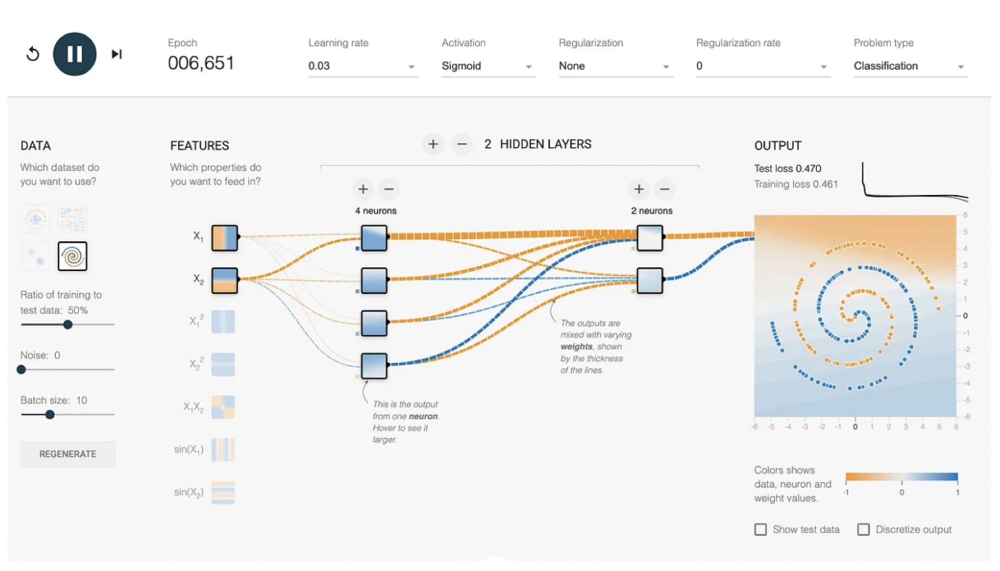
Figure 10. A simple ANN suffered with a complex problem (image source: https://playground.tensorflow.org)
Yes, there is no magic if we do not have insightful data. Even though the ANN is powerful, but same as any machine learning models, it depends on the quality of the input data we have. If we have garbage data, it is impossible that the model can provide a good result as a renowned quote “Garbage in, garbage out”. Therefore, in many cases, the quality of the data along with a powerful machine learning algorithm will give us a great result. Therefore, in this challenging problem, we need more insightful data.
Let’s try increasing model complexity and adding some additional features such as sin(X1) and sin(X2), and train the model again. Now, we can see the result from Figure 11 that the model wasable to classify this challenging spherical problem by just 2,000 iterations of training. This is clearly shown how powerful it is of the artificial neural network model.
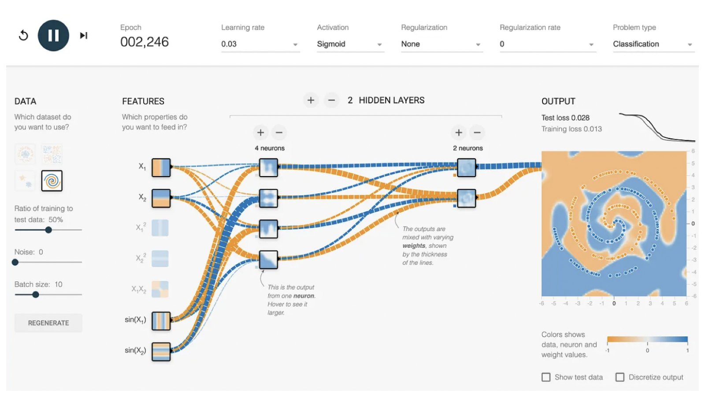
Figure 11. A simple ANN with insightful features (image source: https://playground.tensorflow.org)
One important advantage of ANN is that it can learn to find new useful features by itself if we have a large and deep neural network trained with a large data set. For instance, in image classification problems, sometimes we use a deep neural network with fully connected 1,000 nodes and layers, and if we train the model with large enough data, the model will try to learn to extract important features by itself. It is amazing that the model will learn to construct simple features such as edges and shapes in the first layers while constructing more specific features of that question in the few last layers of the network.
With this powerful ability, a deep neural network is widely in many machine learning applications such as image detection and recognition, image segmentation, medical image analysis, natural language processing, text analytic, speech analytics, brain-computer interfaces, recommender systems, and financial time series, you name it, it is everywhere!
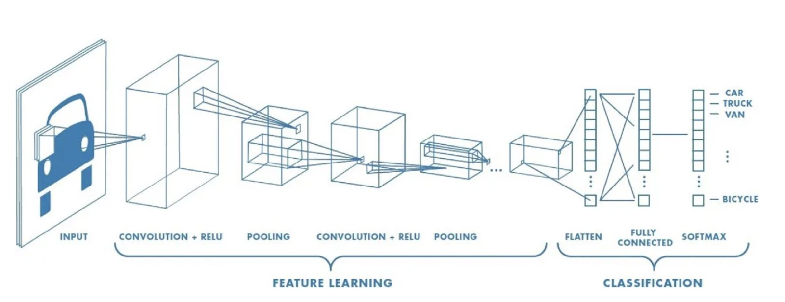
Figure 12. A deep neural network (CNN) in image detection application (image source: https://towardsdatascience.com/a-comprehensive-guide-to-convolutional-neural-networks-the-eli5-way-3bd2b1164a53)
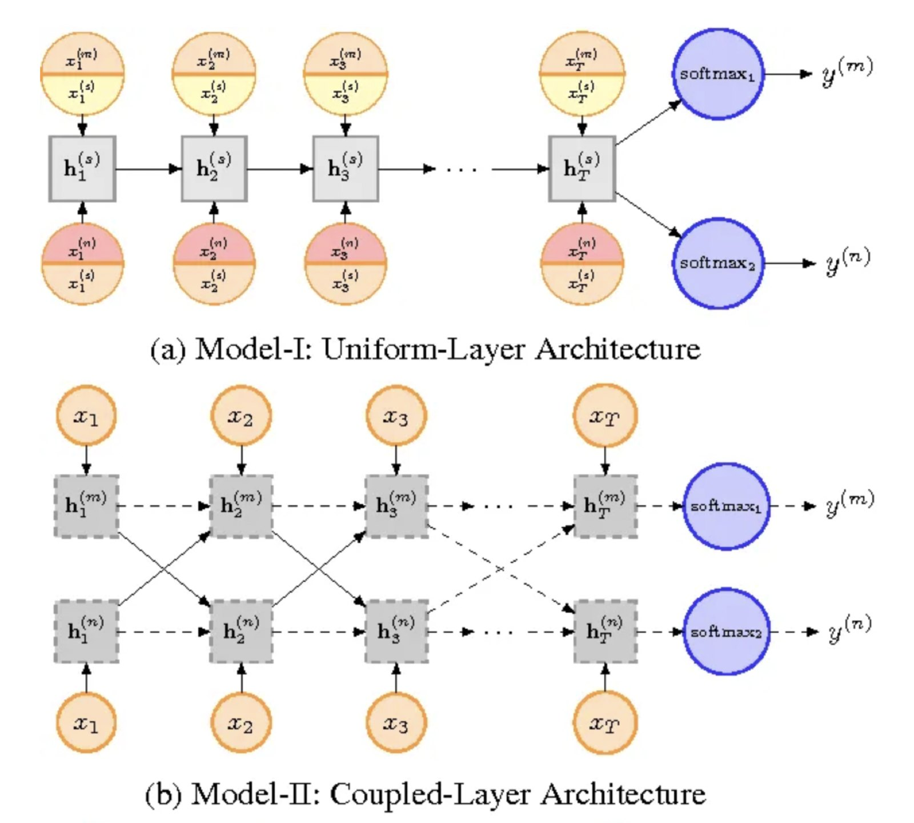
Figure 13. A recurrent neural network (RNN) in text analytic application (image source: https://www.semanticscholar.org/paper/Recurrent-Neural-Network-for-Text-Classification-Liu-Qiu/93eb7d6592290e0b0fa6ee1cde7cb08d2f4aceb6)
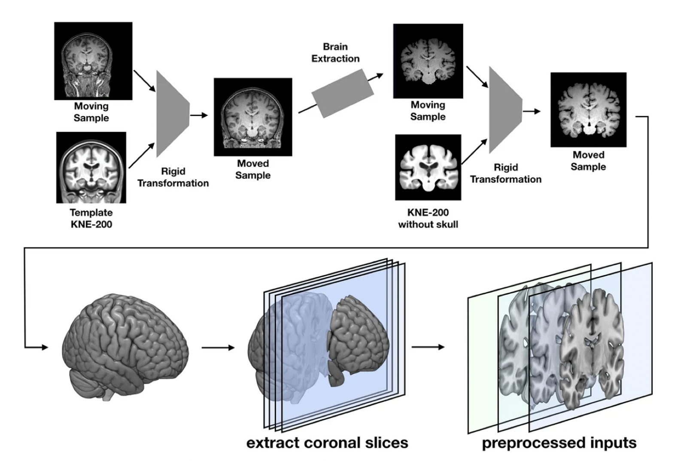
Figure 14. An image classification detecting Alzheimer’s disease in health care application (image source:https://www.nature.com/articles/s41598-020-79243-9)
Summary
An artificial neural network is a powerful tool used in several machine learning applications because of its ability to handle nonlinearity in data, and flexibility in tuning its parameters to capture the true output response. Furthermore, growing to a large and deep network such as a deep learning model is able to construct useful features by itself, and reveal new perspectives of the problem that we, humans, may never think before. Based on these advantages and benefits, the artificial neural network is one of the most prominent and renowned machine learning algorithms nowadays.
References